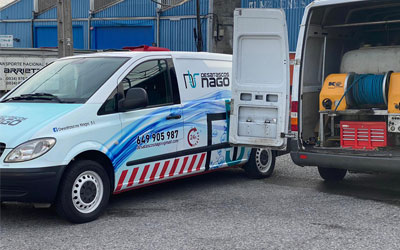
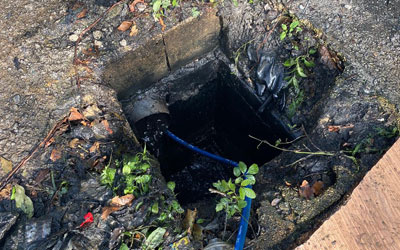

10 años de garantía
Tuberías sin zanja
Reparamos la tubería por dentro, sin levantar el suelo: te ahorras una obra grande. Con 10 años de garantía y un informe al acabar el trabajo.
Urgencias 24 h · 365 días
Desatascos en Irun para particulares, comunidades y empresas, a cualquier hora y cualquier día del año. Llegamos con maquinaria moderna para dar con el problema y solucionarlo rápido.
Servicios
Reparamos la tubería por dentro, sin levantar el suelo: te ahorras una obra grande. Con 10 años de garantía y un informe al acabar el trabajo.
En casas, locales, comunidades y empresas, a cualquier hora.
Limpieza de arquetas y localización de arquetas ocultas.
Vemos el interior de la tubería para encontrar el problema sin romper.
Tuberías, bajantes y red general del edificio.
Limpieza y vaciado.
Cuando hace falta obra, también la hacemos.
Para quién
Fregadero, baño, bajante o arqueta del jardín: nos llamas y vamos.
Mantenimiento de la red del edificio y atención a las averías de la general, para vuestra tranquilidad.
Hostelería, comercios y empresas, con la prioridad que necesita un negocio abierto.
Cómo trabajamos
Nos cuentas qué pasa, por teléfono o si ves una de nuestras furgonetas.
Usamos todos nuestros recursos para detectar el problema y solucionarlo.
Lo solucionamos lo antes posible y con las mínimas molestias.
Un equipo con mucha experiencia, que llega preparado para causar el mínimo daño y dar la mejor solución rápidamente.


Opiniones
«Les llamé y enseguida vinieron. Trabajaron bien, rápido y muy limpios. Vinieron muy preparados, se nota a lo que se dedican.»
Igor E.
«Han llegado con el camión y han estado una mañana en el jardín detectando los problemas y limpiando las arquetas y los conductos. Da gusto verles trabajar.»
Félix Z.
«Siempre nos ayudan con la prioridad que requiere nuestro establecimiento. Son súper amables y el precio es más que razonable.»
Restaurante Kupela
«Muchísimas gracias por vuestra ayuda y solidaridad. Los vecinos de la calle Palleter de Paiporta (Valencia) y los que estuvimos allí echando una mano nunca olvidaremos vuestra ayuda.»
Julio C. · Paiporta, tras la DANA
¿Un atasco ahora mismo?
649 905 987Llámanos a cualquier hora, cualquier día del año. Si no es urgente, escríbenos y te preparamos un presupuesto.